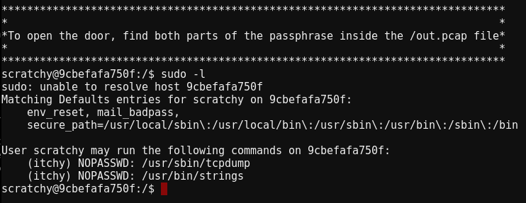
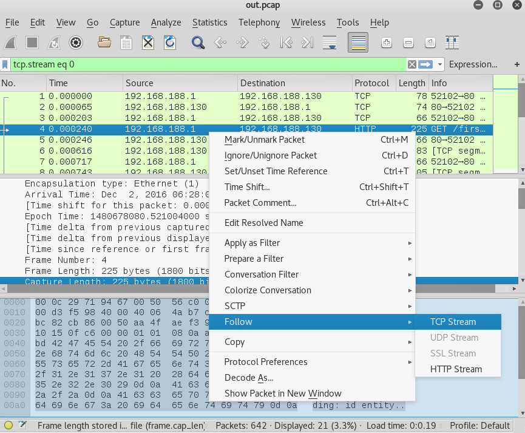
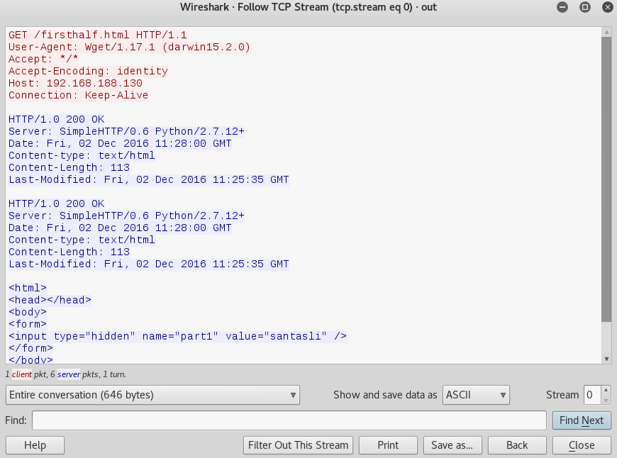
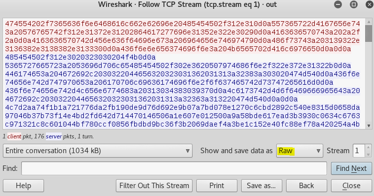
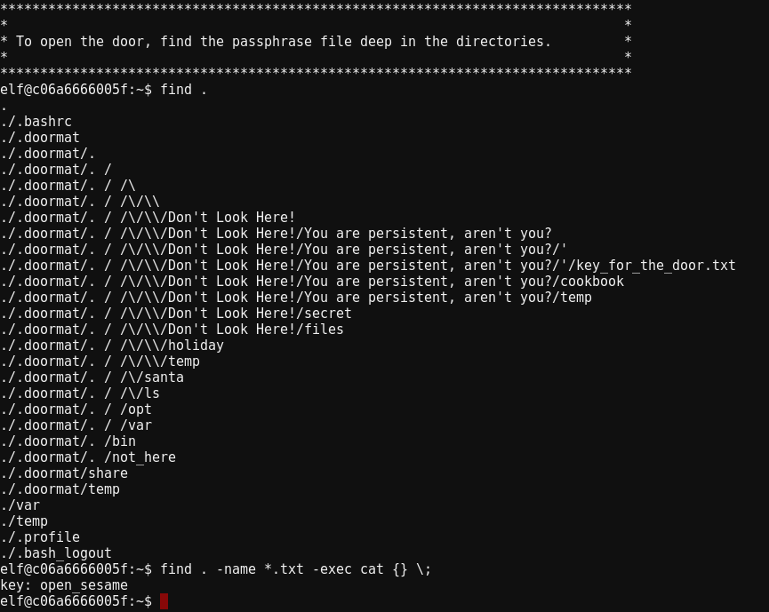
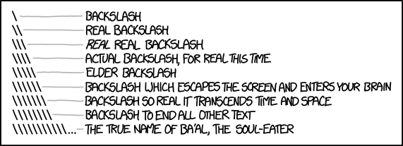

5. What is the password for the “cranpi” account on the Cranberry Pi system?
Holly Evergreen, located right next to the warp portal in the beginning of the game has the ZIP File we seek. Unfortunately, she only gives it out to people who have a working Cranberry Pi. You must walk around and find all the pieces and when you hand them in Holly will give you a link to download the firmware image. https://www.northpolewonderland.com/cranbian.img.zip
After unzipping we are left with cranberry-jessie.img, which binwalk -Me cranberry-jessie.img will extract. Navigating into the directory binwalk extracted the img file to, reveals a Linix Filesystem. Local User account for linux have hashed version of their passwords stored at /etc/shadow, which we can now crack. The relevant line of the shadow file is:
cranpi:$6$2AXLbEoG$zZlWSwrUSD02cm8ncL6pmaYY/39DUai3OGfnBbDNjtx2G99qKbhnidxinanEhahBINm/2YyjFihxg7tgc343b0:17140:0:99999:7:::
- cranpi indicates the username.
- $6$ indicates that this is a sha512crypt hash
- $2AXLbEoG$ is the salt. This is randomly generated and the main purpose is to ensure that two identical passwords do not create the same hash.
Note: $ are used as a delimiter and not part of the actual salt - The stuff after the salt, up to the colon is the hash.
- The numbers after the hash are used for password expiration. Ex: min/max days password expiration, when to warn the user their password is about to expire, etc..
Cracking Sha512Crypt is not a quick process, so we only want to feed it a small dictionary file. Thankfully, Minty Candycane provides a link to a popular wordlist (RockYou). The same file is also on kali within the /usr/share/wordlist directory, if you want to use this one just be sure to decompress it. Run john --wordlist=rockyou.txt shadow to crack the file, it may take a few minutes. One odd quirk of John is that it won’t display the password when finished, instead it puts it in an internal database. To view the password run john shadow --show, which will return yummycookies.
Extra tidbit: The shadow- file contains the user “pi” which has a password of thenorthpole7
6. How did you open each terminal door and where had the villain imprisoned Santa?
This is where it gets fun! There are 5 terminals which when clicking on them bring up an actual terminal in the game. The underlying technology behind it all is WeTTY.
Full text walkthrough is below, but I’ve also recorded myself explaining all the challenges here:
Terminal 1: pcap - https://docker2016.holidayhackchallenge.com:60002
When accessing this terminal, you are logged in as the user scratchy and told the answer is in /out.pcap. The problem is that only itchy can read the file, so first we must switch to that user. One of the first things to check when it comes to linux privilege escalation is what sudo access your current user has. Running sudo -l, showed that the scratchy user can run both strings and tcpdump as the itchy user.

From here the obvious things to do is use strings to view data inside the capture, or tcpdump to parse the capture. I went a different route and exfiltrated the pcap onto my machine. This is a bit of a puzzle because it appears that we Docker Image that doesn’t have a route to the internet and even if we could just send the file back to us over HTTP, strings or tcpdump do not have that capability.
So the first thing to do is to copy the file and hope the UMASK Settings aren’t locked down. UMASK, is what determines how file permissions are set for newly created files, running umask showed 0022 which means files will be created with 644 permissions (rw owner, ro group+everyone). To copy the file we can use tcpdump to read it and output it to a new file. sudo -u itchy tcpdump --r /out.pcap /tmp/out.pcap.
Now there should be a copy at /tmp/out.pcap and scratchy should be able to read it. Which means we can now access the pcap with programs other than just strings and tcpdump. I converted the file to base64, base64 /tmp/out.pcap. Base64, encodes the file into only english characters which is copy and paste friendly! A tip to copy big files on a terminal is to scroll up to the beginning of the output, highlight the first few characters and while still holding the mouse - hit enter to go all the way to the bottom and select the end of output. Copy with ctrl+c and then open up your favorite text editor and paste the output. I saved the file as out.pcap.b64. We can now decode the file and have an identical copy of what was on the server. base64 -d out.pcap.b64 > out.pcap
I opened the file with Wireshark and began looking into the file. Viewing the very first GET Request, showed the first half of the password was “santasli”. I did this by right clicking on the GET Request, and selecting Follow Stream. 
This will open up a window where we can see the entire HTTP Request. The red text indicates the client and blue indicates server. We see the client requested the file /firsthalf.html and within the response we see part1 has a value of santasli. 
When you are done looking at that request, click “Filter out this stream” to go back to the original wireshark window and do the same process with the next request.
We see the second request is attempting to download a binary file and wireshark just shows a bunch of gibberish. To examine the contents of the binary file, we can save the request to disk. Before saving it, click the box next to “Show and save data as” and select “raw”. 
I saved the file as “secondhalf.bin” and began running strings against it. By default strings just converts hex to ascii and looks for english characters 4 characters or more in length. Running strings -h, shows other possible encoding methods to use. If you run strings -e b secondhalf.bin, the output will be ttlhelper.
The full password is santaslittlehelper. This entire challenge was a Simpsons reference. Itchy and Scratchy are characters within simpsons and santaslittlehelper is their dog.
For good measure, we can make sure we didn’t miss any easter eggs in the pcap file by going back to wireshark and filtering both requests out. The following expression will do that: !(tcp.stream eq 0) and !(tcp.stream eq 1), and the result shows no more packets. So there isn’t anything in this pcap file that we didn’t analyze.
Terminal 2: Hard to access file - https://docker2016.holidayhackchallenge.com:60003
This challenge is pretty straight forward, it states there is a file hidden deep within directories. Running find ., will list the file structure of the directory and we see the file key_for_the_door.txt behind a lot of hard to type directories. To top it off they screwed with our TTY settings, so things like tab completion do not work. If you want to fix that just run bash and your terminal will be fixed. However, we don’t need tab completion to help us here we could use find to cat the file for us! find . -name *.txt -exec cat {} ;\

Got the flag and for good measure I wanted to be sure there weren’t any easer eggs. The output of find looked interesting with secret, files, cookbook, etc. I ran find . -type f to check if they were files I should look at, turns out they were just empty directories.
Obligatory XKCD: 
Terminal 3: Wumpus - https://docker2016.holidayhackchallenge.com:60004
This terminal tells you that you can find the passphrase by playing the game wumpus. This is just a binary file and you can start playing by typing ./wumpus. You could try to beat the game legitimately, but text based dungeon games aren’t the most intuitive of games. The easier way is to “reverse engineer” the game, but to do that you’ll need to exfiltrate (aka steal) the game. Do this the same way as I showed in Terminal 1 (with base64).
Once the game is on your computer, you can use gdb to run it in a debugger. Running info functions will return functions within the game. The function kill_wump, looks interesting. Instead of playing the game, lets just to call that function. Run the game by entering “r”, then background and return to the debugger it with ctrl+c. From here we can just enter print kill_wump() and see the output of the function, which turns out to be the password.
Note: In the “real world”, the function names are normally stripped out of the program so don’t expect it always to be this easy.
Terminal 4: Wargames - https://docker2016.holidayhackchallenge.com:60005
When accessing this terminal, “GREETINGS PROFESSOR FALKEN” comes across the screen. If you google that phrase, you’ll find out this is a scene from the movie WarGames. Simply just type the responses that were in the movie and you will get the flag. Everything has to be exact it is even case-sensitive. The responses are:
- Hello.
- I’m fine. How are you?
- People sometimes make mistakes.
- Love to. How about Global Thermonuclear War?
- Later. Let’s play Global Thermonuclear War.
- 2
- Las Vegas
After that it will tell you the password is: LOOK AT THE PRETTY LIGHTS
Terminal 5: Time Traveling Train - https://docker2016.holidayhackchallenge.com:60006
You are greeted with a menu prompt, with a few options.
Running HELP will give the descriptions for what each command does. The description for HELP states: “brings you to this file. If it’s not here, this console cannot do it, unLESS you know something I don’t”.
It’s odd that LESS is capitalized, and looking at the screen it looks like less is actually being used. Less is often used to view text files, output of commands, etc. Many people think that is all it can do.
This is dangerous because less allows people to run system commands, just type !commandhere and it will execute a command. Entering !/bin/sh will bring you to a shell. Once at the command prompt run ./ActivateTrain to start the train up and teleport back to the past!
Note: The video below has me running everything on my local desktop.
When poking around on the file system of this docker image there are a few odd things.
- The password to start the train is an MD5Sum, I tried cracking it briefly but had no luck. So there is a potential easter egg there.
- If you run strings on the ActivateTrain binary, it appears to make a web request to an IP. The Oracle, said the IP Address was out of scope so I left it alone. My guess is that it is a middle man between the binary and actual game server and that request is what tells the game server to teleport us in time.
- The ActivateTrain binary calls /usr/game/sl, which has the string “ACCIDENT” in it. For some reason my gdb did not recognize the format and lldb kept hanging so I didn’t poke around too much. Perhaps there is an easter egg there?
Well that’s it for the terminals!